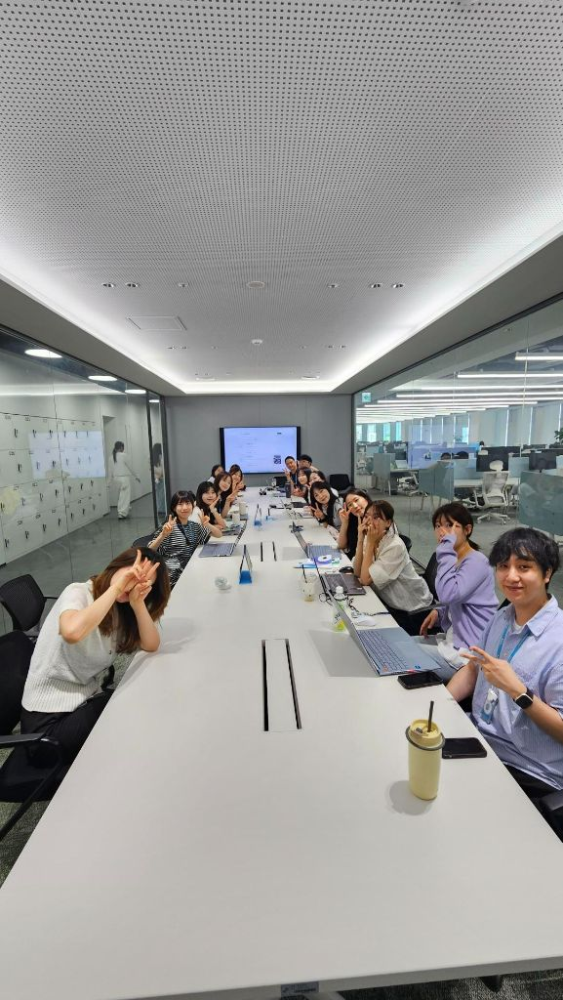

Presentation Record 06
내 삶 속의 인사이트 3
발표 기록
교재마케팅 Cell · 김남우 CP
뉴스레터, 여행, 웹툰, 야구, 캐릭터 IP까지 일상 속 콘텐츠 소비를 통해 타깃의 삶을 이해하고 마케팅 인사이트로 전환하는 방법을 제안한 발표.
개인의 취향과 일상 경험을 단순한 취미로 두지 않고, 브랜드와 타깃을 이해하는 간접 경험의 자산으로 전환하는 발표입니다. 뉴스레터 구독 습관부터 캐릭터 브랜딩, 팬덤, 굿즈 마케팅 사례까지 폭넓게 연결해 실무에 적용할 수 있는 관찰의 프레임을 제시합니다.
